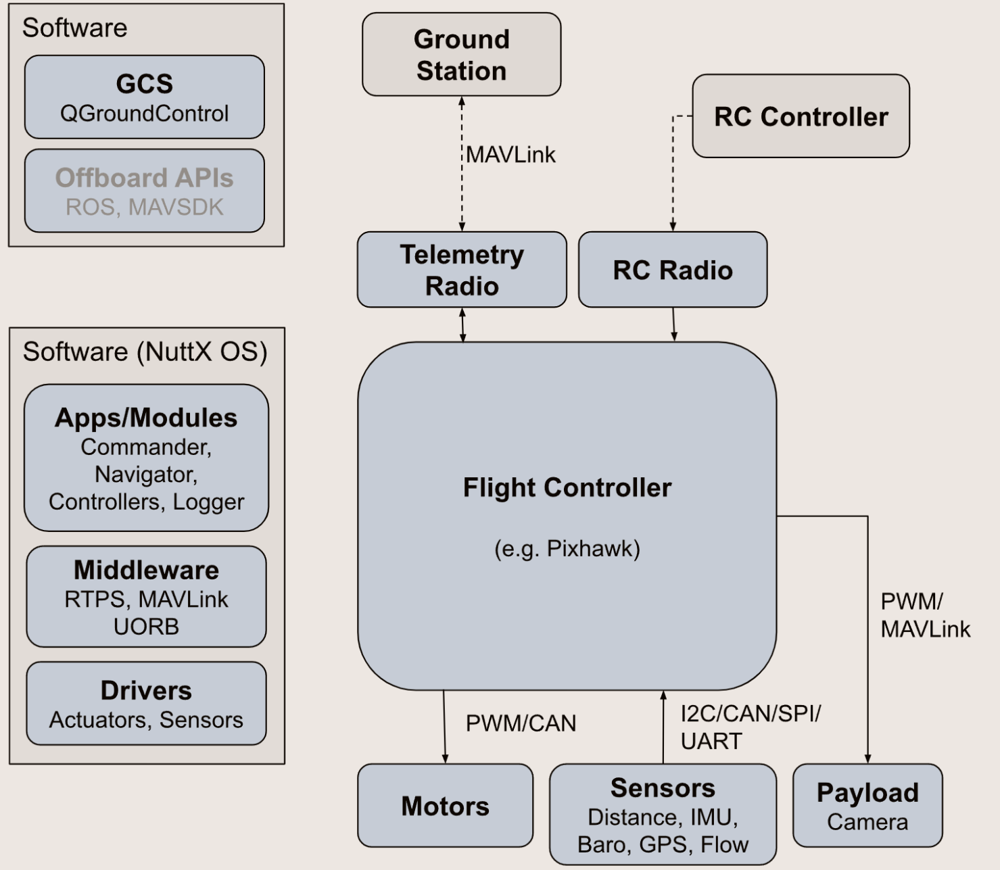
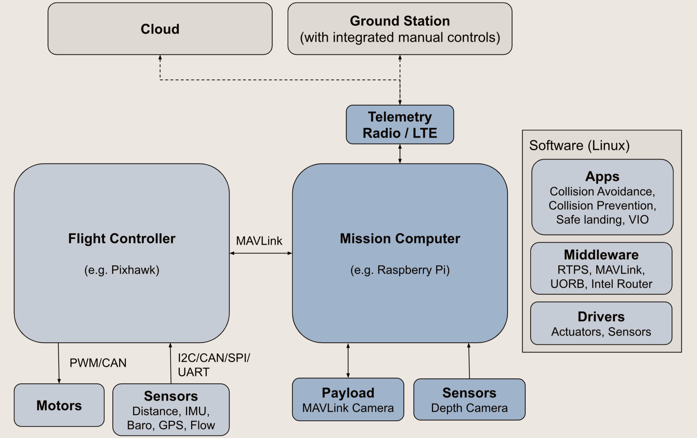
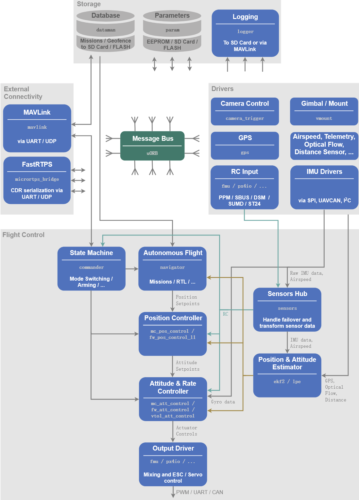
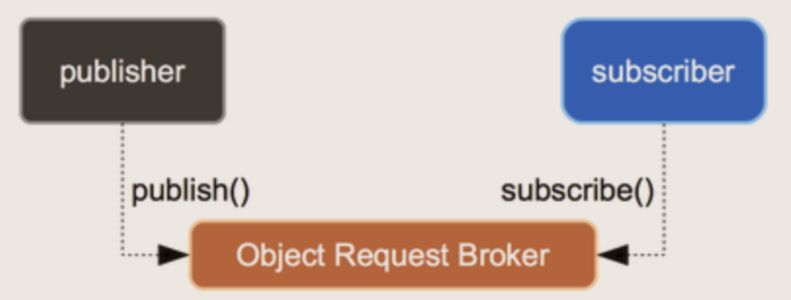
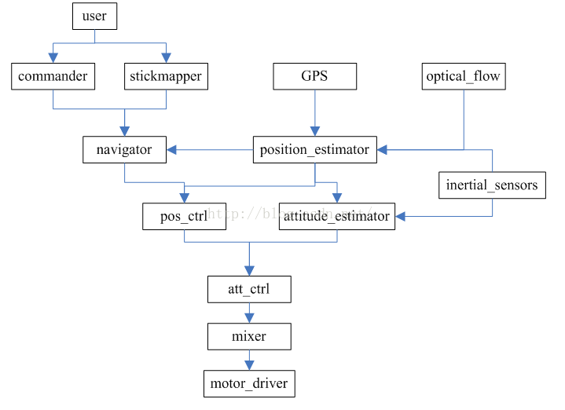
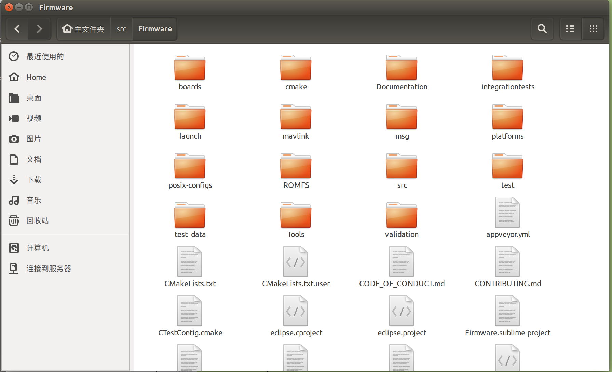
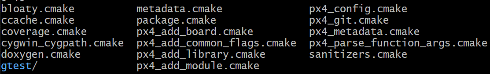

PX4架构
pixhawk大部分的资料都在官网里有说明，以下是PIXHAWK硬件、PX4软件、PX4开发手册的官方网站。
PIXHAWK硬件官网 https://pixhawk.org
PX4软件用户手册 https://docs.px4.io/main/en
PX4中文用户手册 https://docs.px4.io/main/zh
硬件设备
【2021淘宝整理】
电脑：ThinkPad X1 Carbon 2020—ThinkPad官方旗舰店—12999
仿真机：Speedgoat-Baseline-S—上海熠速信息技术有限公司—60000
飞控方案1：
- 飞控pixhawk：雷迅CUAVV5+—CUAV雷迅创新—1499
- GPS：雷迅UBLOX M8NGPS模块—CUAV雷迅创新—300
- 数传：雷迅CUAV pixhawk飞控数传 3DR数传模块—CUAV雷迅创新—278
- 空速计：CUAV雷迅PIX飞控空速计 差压传感器—CUAV雷迅创新—280
飞控方案2：
- 飞控pixhawk：HEX赫星Pixhawk2开源飞控—赫星旗舰店—2000
- GPS：赫星Here3高精度无人机差分GPS(天空端+基站)—赫星旗舰店—3499
- 数传：赫星 RFD900x 高频率数传电台—赫星旗舰店—2000
遥控器方案1：FUTABA T14SG—高安模型淘宝店—3100
遥控器方案2：FUTABA T18MZ—翼飞模型商行2号店—12588
接收机：FUTABA R7008SB 2.4G接收机—高安模型淘宝店—850
PX4系统架构
硬件运行模式
官网给出了两个典型运行模式：单独飞控、飞控+任务计算机。
单独飞控

飞控+任务计算机
飞控芯片能力弱，解算常规控制模式；任务计算机上可以搭载更复杂的算法， 比如防碰撞、图像识别等高级算法。

操作系统
PX4的软件运行提供 POSIX-API 的各种操作系统上（如 Linux、macOS、NuttX ）。
Linux、macOS
在 Linux、macOS 上时，PX4在单个进程中运行，每个模块在自己的线程中运行。
Nuttx
飞控板上首选操作系统为NuttX，Nuttx上有两种的方式运行模块。
任务Tasks：
模块在它自己的任务中运行, 具有自己的堆栈和进程优先级。
工作队列Work queue tasks：
多个任务在同一堆栈上运行，与队列中的其他模块共享相同的堆栈和工作队列线程优先级。
top不显示运行的任务，只显示队列本身。在工作队列上运行模块的优点是它使用较少的 RAM，并可能导致更少的任务切换。缺点是工作队列任务不允许休眠或轮询邮件，或阻止 IO（例如从文件读取）。 长时间运行的任务（执行大量计算）可能还应在单独的任务或至少单独的工作队列中运行。
任务启动
1 | independent_task = px4_task_spawn_cmd( |
飞控启动的流程

PX4软件架构
软件组成
PX4 由两个主要部分组成：
中间件 ，主要负责内部/外部通讯和硬件整合。包括了嵌入式传感器的驱动、通信、uORB。
飞行控制栈（flight stack），负责主要的计算。主要包括状态估计和飞行控制系统。

所有的 PX4 支持的无人机机型共用同一个代码库。 整个系统采用响应式(reactive)设计，这意味着：
- 所有的功能都可以被分割成若干可替换、可重复使用的部件。
- 通过异步消息传递进行通信。
- 系统可以应对不同的工作负载。
开发环境搭建
代码获取
使用 git 拉取官方仓库的代码，尽量不要拉取最新的代码，使用-b拉取稳定版本。
1 | git clone https://github.com/PX4/PX4-Autopilot.git -b v1.12.3 |
代码编译环境
编译飞控固件，可以在Linux、Mac、Windows等环境中。
| Target | Linux (Ubuntu) | Mac | Windows |
|---|---|---|---|
| NuttX based hardware: Pixhawk Series, Crazyflie, Intel® Aero Ready to Fly Drone | ✓ | ✓ | ✓ |
| Linux-based hardware: Raspberry Pi 2/3 | ✓ | ||
| Simulation: jMAVSim SITL | ✓ | ✓ | ✓ |
| Simulation: Gazebo SITL | ✓ | ✓ | ✓ |
| Simulation: Gazebo Classic SITL | ✓ | ✓ | ✓ |
| Simulation: ROS with Gazebo Classic | ✓ | ||
| Simulation: ROS 2 with Gazebo | ✓ |
windows 环境中，使用VScode打开PX4代码文件夹。在VScode的拓展中使用@recommended，查看推荐的插件，其中包括了arm、docker、cmake、jinja、C++、python等工具，安装后即可进行编译。如果在windows上查看不编译，则只需要安装cpptools即可。
1 | { |
PX4也推出了docker环境，也可以在docker中进行编译。只编译飞控使用，可以构建px4-dev-nuttx-focal的docker 环境，同样尽量不使用最新的环境，使用稳定的docker环境。
- px4io/px4-dev-base-focal
- px4io/px4-dev-nuttx-focal
- px4io/px4-dev-simulation-focal
- px4io/px4-dev-ros-noetic
- px4io/px4-dev-ros2-foxy
- px4io/px4-dev-ros-noetic
- px4io/px4-dev-ros2-rolling
- px4io/px4-dev-ros2-galactic
硬件与固件版本
- Pixhawk 2 (Cube Black) (FMUv3):
make px4_fmu-v3_default - CUAV V5+ (FMUv5):
make px4_fmu-v5_default - CUAV V5 nano (FMUv5):
make px4_fmu-v5_default
uORB介绍
uORB机制
消息的更新速率可以使用 uorb top 命令实时查看。

uORB流程
uORB话题发布者：公告(advertise)、发布(publish)。
发布流程：orb_advertise( ) - > orb_publish( )
uORB话题接收者：订阅(subscribe)、查询(poll阻塞式等待或check更新)、复制(copy)。
接收流程：orb_subscribe( ) - > orb_check( ) -> orb_copy( )
uORB常用函数
公告advertise
orb_advert_t orb_advertise(const struct orb_metadata \*meta, const void \*data)
功能：公告发布者的主题；
说明：在发布主题之前是必须的；否则订阅者虽然能订阅，但是得不到数据；
参数：
meta:uORB元对象，可以认为是主题id，一般是通过ORB_ID(主题名)来赋值;
data:指向一个已被初始化，发布者要发布的数据存储变量的指针；返回值：
错误则返回ERROR;成功则返回一个可以发布主题的句柄；如果待发布的主题没有定义或声明则会返回-1，然后会将errno赋值为ENOENT;
公告(advertise)示例：
1 | struct vehicle_attitude_s att; |
发布publish
int orb_publish(const struct orb_metadata \*meta, orb_advert_t handle, const void \*data)
功能：发布新数据到主题；
参数：
meta: uORB元对象，可以认为是主题id，一般是通过ORB_ID(主题名)来赋值;
handle: orb_advertise函数返回的句柄；
data: 指向待发布数据的指针；返回值：
OK表示成功；错误返回ERROR；否则则有根据的去设置errno;
发布(publish)示例：
1 | orb_publish(ORB_ID(vehicle_attitude), att_pub_fd, &att); |
订阅subscribe
int orb_subscribe(const struct orb_metadata \*meta)
功能：订阅主题（topic）;
说明：即使订阅的主题没有被公告，但是也能订阅成功；但是在这种情况下，却得不到数据，直到主题被公告；
参数：
meta:uORB元对象，可以认为是主题id，一般是通过ORB_ID(主题名)来赋值；
返回值：
错误则返回ERROR;成功则返回一个可以读取数据、更新话题的句柄；如果待订阅的主题没有定义或声明则会返回-1，然后会将errno赋值为ENOENT;
订阅(subscribe)示例：1
int fd = orb_subscribe(ORB_ID(topicName));
检查check
int orb_check(int handle, bool \*updated)
功能：订阅者可以用来检查一个主题在发布者上一次更新数据后，有没有订阅者调用过ob_copy来接收、处理过；
说明：如果主题在在被公告前就有人订阅，那么这个API将返回“not-updated”直到主题被公告。可以不用poll，只用这个函数实现数据的获取。
参数：
handle:主题句柄；
updated:如果当最后一次更新的数据被获取了，检测到并设置updated为ture;返回值：
OK表示检测成功；错误返回ERROR;否则则有根据的去设置errno;
检查(check)示例：1
2
3
4
5
6
7if (PX4_OK != orb_check(sfd, &updated)) {
return printf("check(1) failed");
}
if (updated) {
return printf("spurious updated flag");
}1
2
3
4
5
6
7
8
9
10bool updated;
struct random_integer_data rd;
/* check to see whether the topic has updated since the last time we read it */
orb_check(topic_handle, &updated);
if (updated) {
/* make a local copy of the updated data structure */
orb_copy(ORB_ID(random_integer), topic_handle, &rd);
printf("Random integer is now %d\n", rd.r);
}
复制copy
int orb_copy(const struct orb_metadata \*meta, int handle, void \*buffer)
功能：从订阅的主题中获取数据并将数据保存到buffer中；
参数：
meta:uORB元对象，可以认为是主题id，一般是通过ORB_ID(主题名)来赋值;
handle:订阅主题返回的句柄；
buffer:从主题中获取的数据；返回值：
返回OK表示获取数据成功，错误返回ERROR;否则则有根据的去设置errno;
复制(copy)示例1
2struct sensor_combined_s raw;
orb_copy(ORB_ID(sensor_combined), sensor_sub_fd, &raw);
阻塞等待poll
int poll(struct pollfd fds[], nfds_t nfds, int timeout)
功能：监控文件描述符（多个）；
说明：timemout=0,poll()函数立即返回而不阻塞；timeout=INFTIM(-1),poll()会一直阻塞下去，直到检测到return > 0；
参数：
fds:struct pollfd结构类型的数组；
nfds:用于标记数组fds中的结构体元素的总数量；
timeout:是poll函数调用阻塞的时间，单位：毫秒；返回值：
>0：数组fds中准备好读、写或出错状态的那些socket描述符的总数量；
==0:poll()函数会阻塞timeout所指定的毫秒时间长度之后返回;
-1:poll函数调用失败；同时会自动设置全局变量errno；
其他函数
获取主题优先级别
1
ret = orb_priority(handle,&priority);
检测一个主题是否存在
1
ret = orb_exists(ORB_ID(vehicle_attitude),0);
检查一个主题最后的发布时间
1
ret = orb_stat(handle,time);
取消订阅主题
1
ret = orb_unsubscribe(handle);
同主题注册多个类似的驱动程序
1
2
3
4struct orb_test t;
t.val = 0;
int instance0;
orb_advert_t pfd0 = orb_advertise_multi(ORB_ID(orb_multitest), &t, &instance0, ORB_PRIO_MAX);订阅主题（topic）
1
int sfd1 = orb_subscribe_multi(ORB_ID(orb_multitest), 1);
设置订阅的最小时间间隔
1
orb_set_interval(sensor_sub_fd, 1000);
示例
1 |
|
1 |
|
飞行控制栈
主要组成

决策导航部分：根据飞行器自身安全状态和接收到的命令，决定工作模式。
位置姿态估计部分：根据传感器得到自身的位置和姿态信息，EKF。
位置姿态控制部分：根据期望位置和姿态设计控制结构，TECS、L1、PID。
控制器输出部分：mixer和执行器，pwm限幅。
PX4代码列表

| 目录 | 作用 | 备注 |
|---|---|---|
| NuttX | NuttX的系统库 | 一般不使用 |
| Romfs | 文件系统文件夹 | 启动脚本：src/Romfs/px4fmu_common/init.d |
| Cmake | Cmake的模板脚本 | 执行编译时，cmake调用 |
| boards | 各编译版本的cmake文件 | 执行编译时，cmake调用 |
| Mavlink | MAvlink的库目录 | 修改和添加MAVLINLK消息ID |
| Msg | 存放UORB消息主题 | 二次开发添加消息主题 |
| Src | 源码目录存放所有的源码 | 算法主要在src/modules、src/lib |
| src/drivers是驱动，src/Systemcmds是系统命令 |
Make解析
整个编译过程： Make 调用了 CMake, 然后CMake 调用了Ninja 读取 CMakeLists.txt 文件生成编译配置文件, 然后CMake 再调用 Ninja 进行编译。
1 | make px4_fmu-v3_default |
1 | # 新建文件夹，并进入 |
Cmake流程
在根目录执行cmake，读取cmakelists.txt的配置。根据设置，对其子文件夹下包含的cmakelists.txt读取，进而读取所有的cmakelists.txt。因此，在根目录cmakelists.txt中包含需要编译的文件夹，在每个文件夹的cmakelist.stxt中包含所有需要编译的文件。
新增文件后，需要先增加cmakelists，并执行cmake才能在qt中显示。
Cmakelists部分解析
根据根目录的cmakelists.txt解析，如下：
1 | 104 set(PX4_SOURCE_DIR "${CMAKE_CURRENT_SOURCE_DIR}")#设置PX4_SOURCE_DIR的变量 |
cmake文件夹下包含了如下的cmake文件，只需要关注用到的几个cmake即可

如
px4_add_module.cmake定义了一种格式的解析操作，会将如下格式的cmakelists.txt文件解析，生成Makefile。在“编译第一个程序”便使用了这个cmakelists.txt模板。1
2
3
4
5
6
7
8
9
10
11
12px4_add_module(MODULE <string>
MAIN <string>
[ STACK_MAIN <string> ]
[ STACK_MAX <string> ]
[ COMPILE_FLAGS <list> ]
[ INCLUDES <list> ]
[ DEPENDS <string> ]
[ SRCS <list> ]
[ MODULE_CONFIG <list> ]
[ EXTERNAL ]
[ DYNAMIC ]
)如
px4_config.cmake会将参数nuttx_px4fmu-v3_default解析为boards\px4\fmu-v3\default.cmake。如
px4_add_board.cmake定义了可选平台的cmakelists.txt模板。如
boards\px4\fmu-v3\default.cmake定义了所包含的所有应用。1
2
3
4
5
6
7
8
9
10
11
12
13
14
15
16
17
18
19
20
21
22
23
24
25
26
27
28
29
30
31
32
33
34
35
36
37
38
39
40
41
42
43
44
45
46
47
48
49
50
51
52
53
54
55
56
57
58
59
60
61
62
63
64
65
66
67
68
69
70
71
72
73
74
75
76
77
78
79
80
81
82
83
84
85
86
87
88
89
90
91
92
93
94
95
96
97
98
99
100
101
102
103
104
105
106
107
108
109
110
111
112
113
114
115
116
117
118
119
120
121
122
123
124
125
126
127
128
129
130
131
132
133
134
135px4_add_board(
PLATFORM nuttx
VENDOR px4
MODEL fmu-v3
LABEL default
TOOLCHAIN arm-none-eabi
ARCHITECTURE cortex-m4
CONSTRAINED_MEMORY
ROMFSROOT px4fmu_common
IO px4_io-v2_default
UAVCAN_INTERFACES 2
SERIAL_PORTS
GPS1:/dev/ttyS3
TEL1:/dev/ttyS1
TEL2:/dev/ttyS2
TEL4:/dev/ttyS6
DRIVERS
adc/ads1115
adc/board_adc
barometer # all available barometer drivers
batt_smbus
camera_capture
camera_trigger
differential_pressure # all available differential pressure drivers
distance_sensor # all available distance sensor drivers
dshot
gps
heater
#imu # all available imu drivers
imu/analog_devices/adis16448
imu/l3gd20
imu/lsm303d
imu/invensense/icm20608g
imu/invensense/icm20948 # required for ak09916 mag
imu/invensense/mpu6000
imu/invensense/mpu9250
irlock
lights # all available light drivers
magnetometer # all available magnetometer drivers
optical_flow # all available optical flow drivers
osd
pca9685
pca9685_pwm_out
#power_monitor/ina226
#protocol_splitter
pwm_input
pwm_out_sim
pwm_out
px4io
roboclaw
rpm
smart_battery/batmon
telemetry # all available telemetry drivers
tone_alarm
uavcan
MODULES
airspeed_selector
attitude_estimator_q
battery_status
camera_feedback
commander
dataman
ekf2
esc_battery
events
flight_mode_manager
fw_att_control
fw_pos_control_l1
gyro_calibration
gyro_fft
land_detector
landing_target_estimator
load_mon
local_position_estimator
logger
mavlink
mc_att_control
mc_hover_thrust_estimator
mc_pos_control
mc_rate_control
#micrortps_bridge
navigator
rc_update
rover_pos_control
sensors
sih
temperature_compensation
uuv_att_control
uuv_pos_control
vmount
vtol_att_control
SYSTEMCMDS
bl_update
#dmesg
dumpfile
esc_calib
gpio
hardfault_log
i2cdetect
led_control
mft
mixer
motor_ramp
motor_test
mtd
nshterm
param
perf
pwm
reboot
reflect
sd_bench
serial_test
system_time
top
topic_listener
tune_control
uorb
usb_connected
ver
work_queue
EXAMPLES
fake_gps
#fake_imu
#fake_magnetometer
#fixedwing_control # Tutorial code from https://px4.io/dev/example_fixedwing_control
#hello
#hwtest # Hardware test
#matlab_csv_serial
#px4_mavlink_debug # Tutorial code from http://dev.px4.io/en/debug/debug_values.html
#px4_simple_app # Tutorial code from http://dev.px4.io/en/apps/hello_sky.html
#rover_steering_control # Rover example app
#uuv_example_app
#work_item
)
继续解析根目录的cmakelists.txt
1 | # libs、modules |
剩下的是驱动、其他子模块、外部项目。
qt使用cmake
ubuntu上使用qt阅读时，需要先cmake的工程创建成CodeBlocks工程，-G表示编译器。在px4源码Firmware平级目录下新建Firmware-build文件夹。
1 | cd Firmware-build |
Makefile
| makefile语法 | 例子 | 作用 |
|---|---|---|
| wildcard | $(wildcard *.git) | 通用符，当前路径下的所有.git结尾的文件； |
| MAKECMDGOALS | $(MAKECMDGOALS) | （用户输入的）命令行参数； |
| firstword | $(firstword |
取字符串的第一个单词，lastword同理取最后一个单词； |
| wordlist | $(wordlist |
取字符串函数，$(word 1,5， text)表示取text的第1个到第5个单词字串 |
| words | $(words |
统计字符串中单词数目； |
| MAKEFILE_LIST | $(MAKEFILE_LIST) | 包含所有被执行的makefile文件列表，可以通过这个变量查看哪些makefile被执行。当前的makefile总是在列表的最后。 |
| realpath | $(realpath |
获取文件的路径 |
| shell | $(shell |
在 subshell 中执行命令, 例:$(shell echo “Hello world”) ,会输出 Hello world |
| subst | $(subst, |
截取字符串 |
| .PHONY | .PHONY: |
Targets that do not refer to filles but are just actions are called phony targets (执行一些命令但不生成目标文件的 编译目标叫做 Phony target). |
1 | make px4_fmu-v3_default |
读入参数
px4_fmu-v3_default，同时读取当前目录下的Makefile。Makefile的.PHONY中，包含参数px4_fmu-v3_default的定义如下：1
2
3
4
5
6
7
8
9
10
11
12
13
14
15
16
17
18
19
20
21
22
23### 215-216 获取所有boards/*/*.cmake文件
# Get a list of all config targets boards/*/*.cmake
ALL_CONFIG_TARGETS := $(shell find boards -maxdepth 3 -mindepth 3 ! -name '*common*' ! -name '*sdflight*' -name '*.cmake' -print | sed -e 's|boards\/||' | sed -e 's|\.cmake||' | sed -e 's|\/|_|g' | sort)
### 222-236 所有的编译方式和默认编译方式
# All targets.
$(ALL_CONFIG_TARGETS):
@$(eval PX4_CONFIG = $@)
@$(eval CMAKE_ARGS += -DCONFIG=$(PX4_CONFIG))
@$(call cmake-build,$(PX4_CONFIG)$(BUILD_DIR_SUFFIX))
# Filter for only default targets to allow omiting the "_default" postfix
CONFIG_TARGETS_DEFAULT := $(patsubst %_default,%,$(filter %_default,$(ALL_CONFIG_TARGETS)))
$(CONFIG_TARGETS_DEFAULT):
@$(eval PX4_CONFIG = $@_default)
@$(eval CMAKE_ARGS += -DCONFIG=$(PX4_CONFIG))
@$(call cmake-build,$(PX4_CONFIG)$(BUILD_DIR_SUFFIX))
all_config_targets: $(ALL_CONFIG_TARGETS)
all_default_targets: $(CONFIG_TARGETS_DEFAULT)
### 245在
$(ALL_CONFIG_TARGET)和$(CONFIG_TARGETS_DEFAULT)包含了px4_fmu-v3_default，后面出现的规则会覆盖之前出现的规则，因此所以px4_fmu-v3_default的 recipes 为1
2
3
4
5$(CONFIG_TARGETS_DEFAULT):
@$(eval PX4_CONFIG = $@_default)
@$(eval CMAKE_ARGS += -DCONFIG=$(PX4_CONFIG))
@$(call cmake-build,$(PX4_CONFIG)$(BUILD_DIR_SUFFIX))
#$(BUILD_DIR_SUFFIX)根据前面定义为 _reply 或者 为空替换变量后，即为
1
2
3
4CONFIG_TARGETS_DEFAULT := px4_fmu-v3 #分割变量
px4_fmu-v3:
@$(eval CMAKE_ARGS += -DCONFIG=px4_fmu-v3_default)
@$(call cmake-build,px4_fmu-v3_default)即调用
cmake-build，增加编译选项-DCONFIG=px4_fmu-v3_default，并传入参数px4_fmu-v3_default。cmake_build的定义如下：1
2
3
4
5
6
7
8
9
10
11
12
13
14
15
16
17
18
19
20
21
22
23
24
25define cmake-build
# SRC_DIR为makefile的目录，即根目录；$(1)为传入的第一个参数
# BUILD_DIR = "/Firmware/build/px4_fmu-v3_default"
$(eval BUILD_DIR = "$(SRC_DIR)/build/$(1)")
# 调用cmake-cache-check，检查CMAKE_ARGS是否与build_DIR中缓存中已配置的选项匹配
$(call cmake-cache-check)
# 如果是"Ninja"编译器，并且存在"Makefile"，【删除build下生成的目录】
if [ $(PX4_CMAKE_GENERATOR) = "Ninja" ] && [ -e $(BUILD_DIR)/Makefile ]; then rm -rf $(BUILD_DIR); fi
# 如果是"Ninja"编译器，并且不存在"build.ninja"，【删除build下生成的目录】
if [ $(PX4_CMAKE_GENERATOR) = "Ninja" ] && [ ! -f $(BUILD_DIR)/build.ninja ]; then rm -rf $(BUILD_DIR); fi
# 如果不存在cmake缓存，或者cmake设置不一样，则【使用"Ninja"编译器重新执行cmake，在Firmware下生成ninja的编译配置文件】，否则，删除build下生成的目录
# cmake ./ -G"ninja" -DCONFIG=px4_fmu-v3_default
if [ ! -e $(BUILD_DIR)/CMakeCache.txt ] || [ $(CMAKE_CACHE_CHECK) ]; then \
mkdir -p $(BUILD_DIR) \
&& cd $(BUILD_DIR) \
&& cmake "$(SRC_DIR)" -G"$(PX4_CMAKE_GENERATOR)" $(CMAKE_ARGS) \
|| (rm -rf $(BUILD_DIR)); \
fi
# 执行cmake --build，参数为并行数，$(ARGS)为剩余的参数
cmake --build $(BUILD_DIR) -- $(PX4_MAKE_ARGS) $(ARGS)
endef补充
1
2
3
4
5
6
7
8
9
10
11
12
13
14
15
16
17
18
19
20
21
22
23
24
25
26
27
28
29
30
31
32
33
34
35
36
37
38
39
40
41
42
43
44
45
46
47
48
49
50
51
52
53
54
55
56
57
58
59
60
61
62
63
64
65
66
67
68
69
70
71
72
73
74
75
76
77
78
79
80
81
82
83
84
85### 59-60 设置默认编译目标
# explicity set default build target
all: px4_sitl_default
### 74-75 读取用户输入参数，FIRST_ARG为第一个字符，ARGS为剩余字符
FIRST_ARG := $(firstword $(MAKECMDGOALS))
ARGS := $(wordlist 2,$(words $(MAKECMDGOALS)),$(MAKECMDGOALS))
### 79-80 设置开多少jobs，进行并行执行
MAKE_PID := $(shell echo $$PPID)
j := $(shell ps T | sed -n 's|.*$(MAKE_PID).*$(MAKE).* \(-j\|--jobs\) *\([0-9][0-9]*\).*|\2|p')
### 85-121 设置是否用构建工具ninja生成CMake文件
NINJA_BIN := ninja
ifndef NO_NINJA_BUILD
NINJA_BUILD := $(shell $(NINJA_BIN) --version 2>/dev/null)
ifndef NINJA_BUILD
NINJA_BIN := ninja-build
NINJA_BUILD := $(shell $(NINJA_BIN) --version 2>/dev/null)
endif
endif
ifdef NINJA_BUILD
PX4_CMAKE_GENERATOR := Ninja
PX4_MAKE := $(NINJA_BIN)
ifdef VERBOSE
PX4_MAKE_ARGS := -v
else
PX4_MAKE_ARGS :=
endif
# Only override ninja default if -j is set.
ifneq ($(j),)
PX4_MAKE_ARGS := $(PX4_MAKE_ARGS) -j$(j)
endif
else
ifdef SYSTEMROOT
# Windows
PX4_CMAKE_GENERATOR := "MSYS\ Makefiles"
else
PX4_CMAKE_GENERATOR := "Unix\ Makefiles"
endif
# For non-ninja builds we default to -j4
j := $(or $(j),4)
PX4_MAKE = $(MAKE)
PX4_MAKE_ARGS = -j$(j) --no-print-directory
endif
### 123 获取当前makefile的路径
SRC_DIR := $(shell dirname "$(realpath $(lastword $(MAKEFILE_LIST)))")
### 132-161 传递cmake参数,包括是否包括外部模块,及 cmake 的build 的类型
# additional config parameters passed to cmake
ifdef EXTERNAL_MODULES_LOCATION
CMAKE_ARGS += -DEXTERNAL_MODULES_LOCATION:STRING=$(EXTERNAL_MODULES_LOCATION)
endif
ifdef PX4_CMAKE_BUILD_TYPE
CMAKE_ARGS += -DCMAKE_BUILD_TYPE=${PX4_CMAKE_BUILD_TYPE}
else
# Address Sanitizer
ifdef PX4_ASAN
CMAKE_ARGS += -DCMAKE_BUILD_TYPE=AddressSanitizer
endif
# Memory Sanitizer
ifdef PX4_MSAN
CMAKE_ARGS += -DCMAKE_BUILD_TYPE=MemorySanitizer
endif
# Thread Sanitizer
ifdef PX4_TSAN
CMAKE_ARGS += -DCMAKE_BUILD_TYPE=ThreadSanitizer
endif
# Undefined Behavior Sanitizer
ifdef PX4_UBSAN
CMAKE_ARGS += -DCMAKE_BUILD_TYPE=UndefinedBehaviorSanitizer
endif
endif
编写第一个程序
官网教程 http://docs.px4.io/master/en/modules/hello_sky.html
编写函数
/Firmware/src/examples，建立hello_sky文件夹，在该hello_sky文件夹下建立两个文件：CMakeLists.txt，hello_zyw.c
CMakeLists.txt
1
2
3
4
5
6
7
8
9
10
11
12
13px4_add_module(
//如果根目录是/Firmware/src/modules，则这里使用modules__hello_sky
MODULE examples__hello_sky //hello_sky前面有两个下划线
//c程序里的主函数为hello_main
MAIN hello
//所包含的.c文件为hello_zyw.c，若有子文件，要全部写入
SRCS
hello_zyw.c
DEPENDS
)hello_zyw.c
1
2
3
4
5
6
7
8
9
10
__EXPORT int hello_main(int argc, char *argv[]);//声明主函数为hello_main
int hello_main(int argc, char **argv)//主函数
{
printf("hello sky!\n");
printf("goodbye\n");
return 0;
}
在默认的cmake中添加该文件夹，V1.10.2版的cmake位置在：src/Firmware/boards/px4/fmu-v3/default.cmake
在EXAMPLES下面加入hello_sky【如果上面在modules中，则在MODULES中加】
编译
1.在/Firmware下打开终端，先make clean，再make px4_fmu-v3_default
2.在/Firmware会生成一个build文件夹，打开/build/px4_fmu-v3_default，为编译生成的文件
3.固件为px4_fmu-v3_default.px4
烧固件
将上述生成的px4_fmu-v3_default.px4复制到桌面，打开QGC，选择固件，插入数据线，选择“用户自定义”，确定，选择px4_fmu-v3_default.px4，等待烧写完毕。
订阅消息的函数
1 | /** |